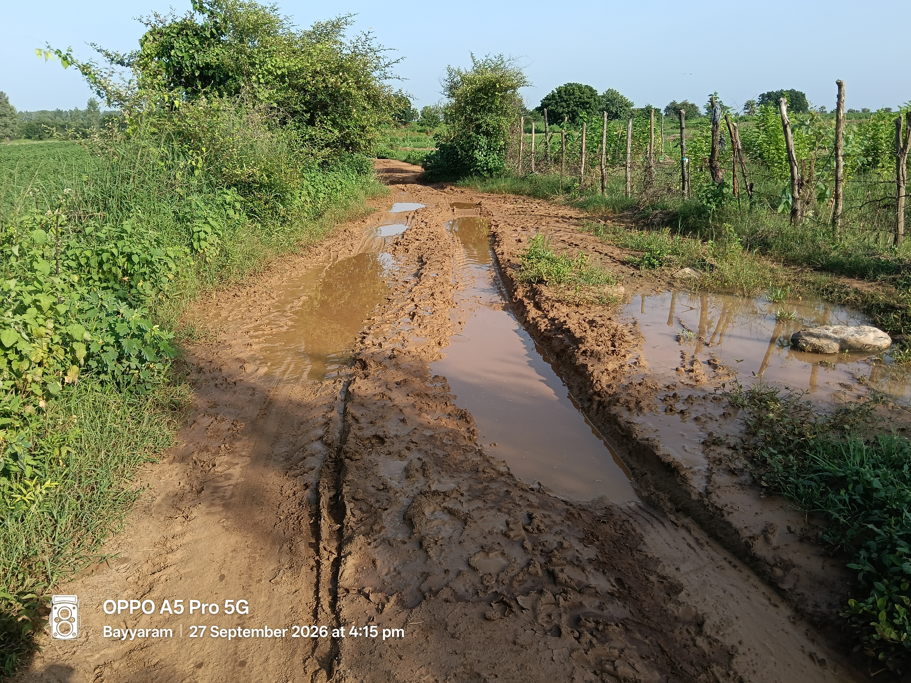

అధ్వాన్న స్థితిలో బస్వాపూర్ రహదారి.. స్మశాన వాటికకు వెళ్లాలన్నా తప్పని తిప్పలు!

కాటారం (మానేరు వార్త బ్యూరో): కాటారం మండలం మేడిపల్లి గ్రామపంచాయతీ పరిధిలోని బస్వాపూర్ గ్రామం నుండి స్మశాన వాటికకు మరియు పంట పొలాలకు వెళ్లే దారి అత్యంత దారుణంగా తయారైంది. ఇటీవల కురిసిన వర్షాలకు రోడ్డంతా బురదమయమై కనీసం మనుషులు నడవలేని స్థితిలో ఉంది.
ఊరిలో ఎవరైనా చనిపోయినప్పుడు అంతిమ సంస్కారాలకు శవాన్ని తీసుకువెళ్లడానికి వీలు లేకుండా తయారైందని, గ్రామస్తులు తీవ్ర ఇబ్బందులు పడుతున్నారు. అలాగే నిత్యం పంట పొలాలకు వెళ్లే రైతులు, వ్యవసాయ కూలీలు రాకపోకలు సాగించలేక అవస్థలు పడుతున్నారు. గతంలో పలుమార్లు ప్రజాప్రతినిధులకు, అధికారులకు గ్రామ ప్రజలు ఎన్నిసార్లు విన్నవించినా పరిస్థితిలో మార్పు రాలేదు. ఇప్పటికైనా అధికారులు, పాలకులు స్పందించి స్మశాన వాటిక వరకు సీసీ రోడ్డు నిర్మాణం చేపట్టాలని బస్వాపూర్ గ్రామ ప్రజలు కోరుతున్నారు.